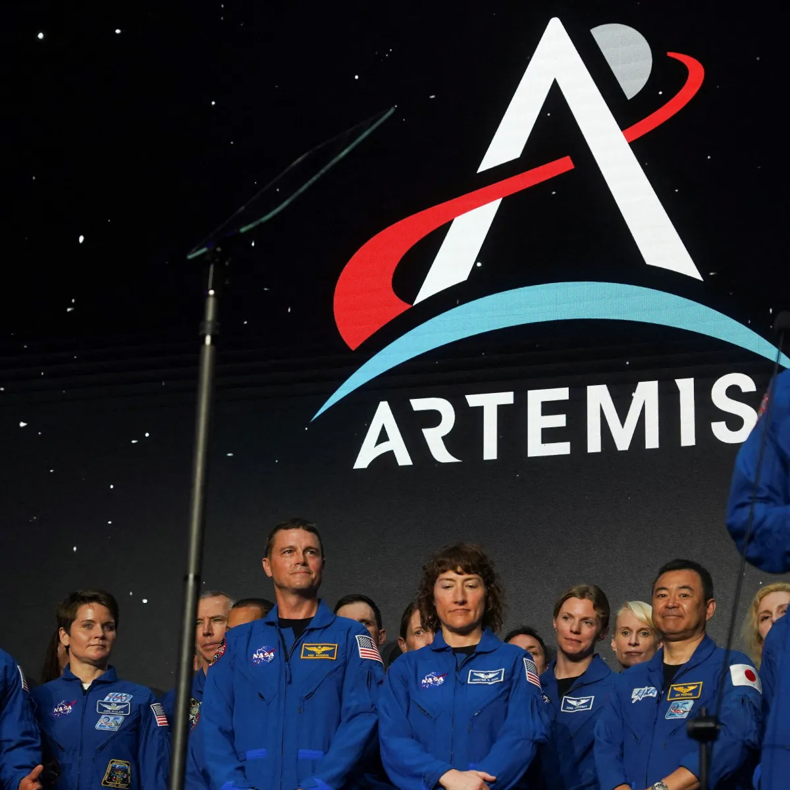
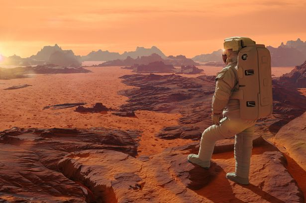

Novidades
Fique atualizado com as últimas notícias e descobertas da NASA.
Missão Artemis
O lançamento histórico da missão Artemis marca o retorno à Lua.
Exploração de Marte
O rover Perseverance continua a revelar segredos do Planeta Vermelho.
Tecnologia Espacial
Novos avanços na tecnologia para tornar a exploração mais eficiente.
Espaço
Explore o cosmos e nossos projetos de exploração espacial.
Clima e Terra
Conheça nossas pesquisas sobre clima e condições terrestres.
Mudanças Climáticas
Estudos recentes mostram impactos das mudanças climáticas no Ártico.
Desastres Naturais
Monitoramento de furacões e tempestades para prevenção de desastres.
Recursos Naturais
A NASA investiga a conservação dos recursos naturais da Terra.
Sobre a NASA
Saiba mais sobre a história e as missões da NASA.
A NASA, ou Administração Nacional da Aeronáutica e Espaço, é a agência espacial dos Estados Unidos, responsável por pesquisas e explorações no campo da aeronáutica e da astrofísica. Fundada em 1958, a NASA se destacou por suas missões históricas, como o programa Apollo, que levou os primeiros humanos à Lua, e o programa Mars Rover, que explora o solo marciano. Com um compromisso constante com a inovação e a descoberta, a NASA continua a inspirar gerações, ampliando nossos conhecimentos sobre o universo e promovendo a tecnologia espacial. Descubra mais sobre suas fascinantes missões e o impacto que elas têm no nosso entendimento do cosmos.
Contato
Entre em contato conosco para mais informações.